12 Équilibre chimique 2
Une remarque ? Écrivez-nous — coquille, question, suggestion.
Ce que nous savons déjà — Nous savons déjà qu’un équilibre chimique se caractérise par une constante \(K\) qui relie les concentrations des espèces en solution à l’état d’équilibre. Nous savons comparer le quotient réactionnel \(Q\) à \(K\) pour prédire l’évolution d’un système, et résoudre un tableau d’avancement pour trouver les concentrations à l’équilibre.
Ce que ce chapitre construit — Ce chapitre applique ces outils à un cas précis : la dissolution des sels peu solubles dans l’eau. Nous allons découvrir le produit de solubilité \(K_s\), constante d’équilibre propre à cet équilibre de dissolution, et la solubilité \(s\) qui en découle. Nous verrons aussi comment la présence d’un ion déjà dissous en solution peut réduire la quantité de sel qui se dissout.
Ce que nous saurons faire — À la fin de ce chapitre, nous serons capables de calculer \(K_s\) à partir d’une solubilité mesurée, et inversement. Nous saurons prédire si un mélange de deux solutions provoque l’apparition d’un solide, puis calculer les concentrations de chaque ion restant en solution après cette précipitation.
Projet-Balmer Dernière mise à jour : 2026-10-05
Nous savons déjà que…
- La constante d’équilibre \(K\) est un produit d’activités chimiques à l’équilibre : l’activité d’un solide pur vaut 1, celle d’un soluté correspond à sa concentration en mol/L.
- Le quotient réactionnel \(Q\) se calcule comme \(K\) mais à n’importe quel instant : \(Q < K\) signifie que le système évolue dans le sens direct, \(Q > K\) dans le sens inverse, \(Q = K\) indique l’équilibre.
- La méthode du tableau d’avancement avec la variable \(x\) relie les concentrations initiales aux concentrations à l’équilibre et permet de résoudre l’expression de \(K\).
Ces acquis sont les points d’appui directs de ce chapitre — nous allons appliquer cette même constante \(K\) à un nouvel équilibre : celui d’un solide ionique avec ses ions dissous en solution.
Mini-test — vérifions nos acquis avant de continuer :
- Pour la réaction \(\ce{AgCl(s) <=> Ag+(aq) + Cl-(aq)}\), que vaut l’activité de \(\ce{AgCl(s)}\) dans l’expression de \(K\) ?
- Pour une réaction d’équilibre, nous mesurons \(Q > K\). Dans quel sens le système va-t-il évoluer ?
- Dans un tableau d’avancement, à quoi correspond la variable \(x\) à l’équilibre ?
Si nous répondons sans hésiter, nous sommes prêts — passons à la Zone 2. Si certaines réponses hésitent, relisons les points ci-dessus avant de continuer.
Projet-Balmer Dernière mise à jour : 2026-10-05
12.0.1 Les équilibres entre solides et solutions
Les équilibres entre l’état solide d’un composé et de sa forme hydratée en solution sont une application importante de la théorie des équilibres chimiques.
En chimie, un composé solide (composé moléculaire solide ou sels cristallin) en équilibre thermodynamique avec une solution est appelé précipité.
La présence d’un précipité stable résulte ainsi d’un équilibre thermodynamique entre la phase liquide (solution) et la phase solide (sel).
Exemple d’apparition d’un soluté: Lorsque la quantité maximale de soluté qui peut être dissoute dans un volume donné de solvant est atteinte (état de saturation), l’ajout de soluté fait apparaître un précipité : une phase dispersée solide dans une matrice liquide.
Conception courante : On pourrait croire qu’un sel “insoluble” ne se dissout absolument pas dans l’eau. C’est inexact : tout sel ionique se dissout au moins partiellement. La distinction de solubilité entre tous les sels ne devrait pas être soluble ou insoluble, mais peu soluble ou très soluble.
Analogie : Imaginez un récipient contenant de l’eau. Tant que vous en ajoutez peu de sucre, tout se dissout. À partir d’un certain seuil, le sucre s’accumule au fond : la solution est saturée. Un sel peu soluble atteint ce seuil avec une infime quantité dissoute — mais le même équilibre est à l’œuvre.
Notation d’un équilibre entre un composé solide et sa partie dissoute en solution:
La précipitation est notée comme une équation chimique. Par convention, le solide prend la place du réactif et les ions aqueux ont la place des produits :
\[\ce{NaCl(s) <=> Na+(aq) + Cl-(aq)}\]
(précipité (solide) à gauche ; ions en solution (solution saturée) à droite)
Les ions en milieu aqueux (aq) désignent les espèces dissociées (le sel dissous) et le solide (s) désigne le sel cristallisé.
Dans ce chapitre, nous allons principalement nous concentré sur les équilibres chimiques entre composés ioniques solides et leur ions en solution. Les composés moléculaires n’en est qu’un application assez simple.
12.0.2 Constante de la loi d’action de masse K (rappel)
Comme déjà vu dans les chapitres précédents, il existe une relation générale entre les concentrations des espèces présentes à l’équilibre en solution et la constante d’équilibre K appelée constante de la loi d’action de masse K :
Pour la réaction \(\ce{aA + bB <=> cC + dD}\) :
\[K = \frac{(\alpha_C)^c \cdot (\alpha_D)^d}{(\alpha_A)^a \cdot (\alpha_B)^b}\]
Avec :
- K : constante d’équilibre
- \((\alpha_i)^{\nu_i}\) : activité chimique de l’espèce i à l’équilibre mise à la puissance de son coefficient stœchiométrique \(\nu_i\)
L’activité chimique, ou activité, d’une espèce chimique exprime l’écart entre les propriétés d’une espèce pure et les propriétés de cette même espèce dans un état standard à la même température.
Ce que vous devez vous rappeler est que l’activité \(\alpha_i\) d’un produit ou d’un réactif se caractérise :
- \(\alpha_i = 1\) si la substance est un solide ou un liquide pur (solvant inclus)
- \(\alpha_i = P_x\) (en atm) - une pression - si la substance est un gaz mais peut être aussi exprimée en mol/l
- \(\alpha_i = [X]\) (en mol/L) – une concentration - si la substance est un soluté
12.0.2.1 Le produit solubilité \(K_s\)
On considère la dissolution d’un solide ionique de formule \(\ce{X_\alpha Y_\beta}\).
L’équation de précipitation est décrite de la manière suivante :
\[\ce{X_\alpha Y_\beta (s) <=> \alpha X^{\beta+}(aq) + \beta Y^{\alpha-}(aq)}\]
Le produit de solubilité \(K_s\) est la constante d’équilibre correspondant à la dissolution d’un solide dans un solvant.
Au niveau particulaire : Dans une solution dite saturée (présence à l’équilibre du composé solide \[\ce{X_\alpha Y_\beta (s)\], les ions \(\ce{X^{\beta+}}\) et \(\ce{Y^{\alpha-}}\) quittent la surface du cristal à la même vitesse qu’ils y retournent. Le solide et la solution coexistent : c’est un équilibre dynamique entre la phase solide et la phase dissoute.
Représentation symbolique : Le composé ionique solide étant un solide pur, son activité (\(\alpha_i\)) est égale à 1. Les activités des ions dans un milieu aqueux correspondent à leurs concentrations exprimées en moles par litre (mol/L), divisées par une concentration de référence \(C_0 = 1\) mol/L:
\[K_s = \frac{(\alpha_{X^{\beta+}})^\alpha \cdot (\alpha_{Y^{\alpha-}})^\beta}{(\alpha_{X_\alpha Y_\beta (s)})} = [\ce{X^{\beta+}}]^\alpha \cdot [\ce{Y^{\alpha-}}]^\beta\]
(ions en solution \(\Rightarrow \alpha = [\ ]\) ; solide \(\Rightarrow \alpha = 1\))
Exemple travaillé : Écrire l’équation ionique de précipitation et l’expression de \(K_s\) pour \(\ce{NaCl}\), \(\ce{PbCl2}\) et \(\ce{Ca(OH)2}\).
\(\ce{NaCl}\) :
\[\ce{NaCl(s) <=> Na+(aq) + Cl-(aq)}\]
\[K_s = [\ce{Na+}][\ce{Cl-}]\]
\(\ce{PbCl2}\) :
\[\ce{PbCl2(s) <=> Pb^{2+}(aq) + 2 Cl-(aq)}\]
\[K_s = [\ce{Pb^{2+}}][\ce{Cl-}]^2\]
\(\ce{Ca(OH)2}\) :
\[\ce{Ca(OH)2(s) <=> Ca^{2+}(aq) + 2 OH-(aq)}\]
\[K_s = [\ce{Ca^{2+}}][\ce{OH-}]^2\]
La dissolution nécessite de connaître vos dissociations de sel. Le tableau ci-dessous vous aide à dissocier correctement certains sels.
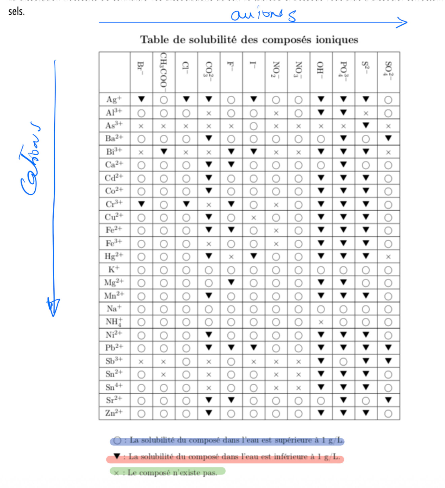
Écrire les équations ioniques de précipitation de l’expression des \(K_s\) pour les précipités suivants :
| Formule | Nom du composé | \(K_s\) |
|---|---|---|
| NaCl | Chlorure de sodium | 32,98 |
| TiBrO₃ | Bromate de titane | \(1,7 \times 10^{-4}\) |
| PbCl₂ | Chlorure de plomb(II) | \(1,6 \times 10^{-5}\) |
| Ca(OH)₂ | Hydroxyde de calcium | \(5,5 \times 10^{-6}\) |
| TiBr | Bromure de titane | \(3,4 \times 10^{-6}\) |
| NiCO₃ | Carbonate de nickel | \(1,3 \times 10^{-7}\) |
| CaC₂O₄ | Oxalate de calcium | \(2 \times 10^{-9}\) |
| MnS | Sulfure de manganèse(II) | \(2,5 \times 10^{-13}\) |
| Cu(OH)₂ | Hydroxyde de cuivre(II) | \(5,0 \times 10^{-19}\) |
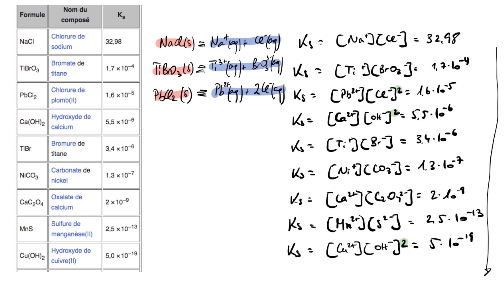
12.0.3 La solubilité \(s\)
Formalisation : La solubilité \(s\) (en mol/L) est la quantité maximale de soluté qui peut se dissoudre dans un litre de solvant à une température donnée. La solubilité massique \(S\) (en g/L) s’obtient par \(S = s \cdot M\), où \(M\) est la masse molaire du sel (en g/mol).
Conception courante : On confond souvent \(K_s\) et la solubilité. \(K_s\) est une constante d’équilibre — elle ne dépend que de la température. La solubilité \(s\) est la concentration maximale de sel dissous dans ces conditions — elle se calcule à partir de \(K_s\) via la stœchiométrie, mais les deux grandeurs ne sont pas identiques.
Le produit de solubilité \(K_s\) est directement lié à la solubilité \(s\) (et, par conversion, à \(S\)).
Attention : cette sous-section introduit deux opérations distinctes que vous pouvez traiter séparément : (1) calculer \(s\) depuis \(K_s\) — sens direct ; (2) calculer \(K_s\) depuis \(S\) mesurée — sens inverse. Si les deux directions vous semblent lourdes à la première lecture, maîtrisez d’abord le sens direct avant d’aborder le sens inverse.
La solubilité permet de distinguer trois états de la solution :
| État de la solution | Concentration en sel dissous | Précipité présent ? |
|---|---|---|
| Insaturée | \(< s\) | Non |
| Saturée | \(= s\) | Non, mais limite atteinte |
| Sursaturée | \(> s\) | Oui — excès de solide au fond |
Au niveau particulaire : Dans une solution insaturée, tous les ions sont en solution. À saturation, la vitesse de dissolution égale la vitesse de recristallisation. En solution sursaturée, une partie des ions se réorganise en réseau cristallin et forme le précipité visible.
Représentation symbolique : La solubilité se calcule par le tableau d’avancement. Pour \(\ce{X_\alpha Y_\beta (s) <=> \alpha X^{\beta+}(aq) + \beta Y^{\alpha-}(aq)}\), en posant \(x = s\) :
\[K_s = (\alpha \cdot s)^\alpha \cdot (\beta \cdot s)^\beta = \alpha^\alpha \cdot \beta^\beta \cdot s^{\alpha+\beta}\]
Exemple : écrire l’équation de précipitation du NaCl et calculer sa solubilité \(s\) et \(S\) :
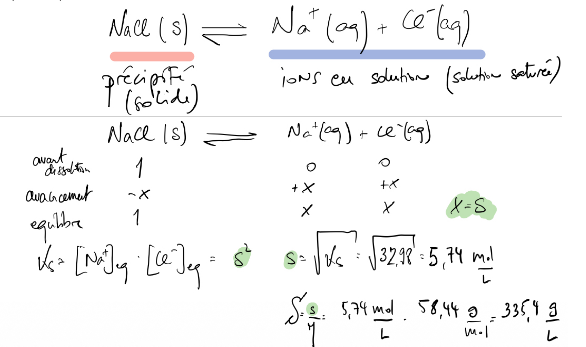
Exemple : La solubilité de AgCl est de \(1,8 \times 10^{-4}\) g par 100 ml à 25°C. Calculer son produit de solubilité \(K_s\). (Réponse : \(1,59 \times 10^{-10}\))
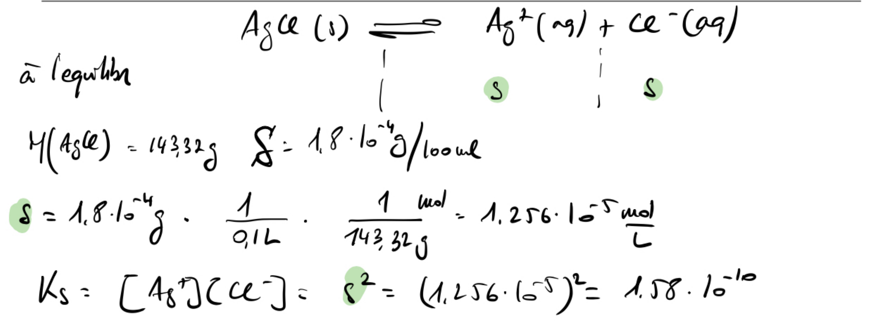
Exemple : La solubilité de PbI₂ est de 0,07 g par 100 ml à 25°C. Calculer son produit de solubilité \(K_s\). (réponse : \(1,4 \times 10^{-8}\))
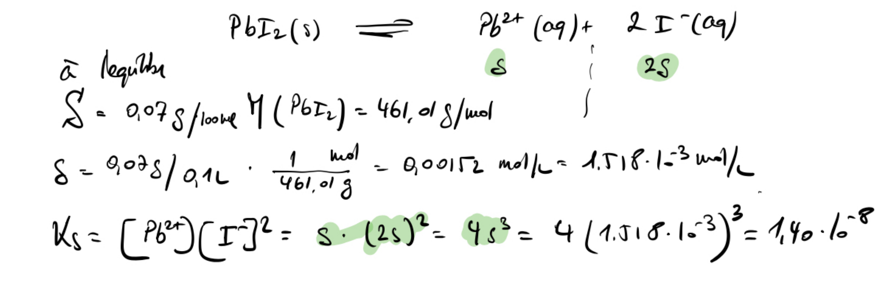
Exercice : la solubilité dans l’eau de Cu₃(PO₄)₂ est de 6,35 µg/l. Quel est le produit de solubilité ? (Réponse : \(1,4 \times 10^{-37}\))
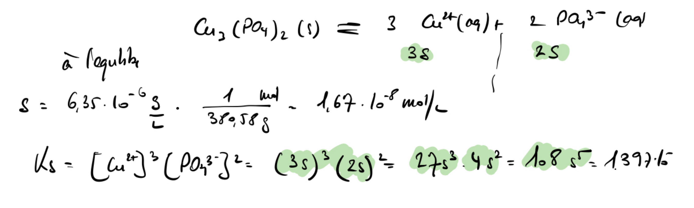
Exemple : Le \(K_s\) de AgBr vaut \(5,3 \times 10^{-13}\) à 25°C. Quelle est sa solubilité \(S\) en g/100 ml ? (Réponse : \(1,36 \times 10^{-5}\) g/100 ml)
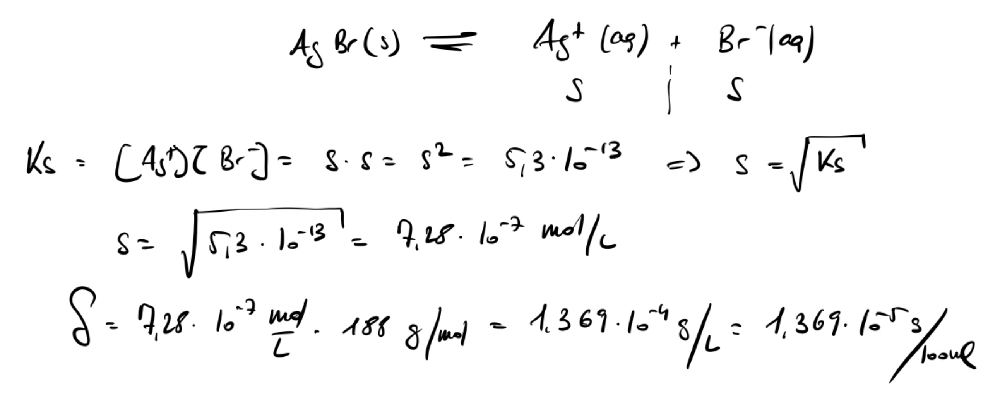
Exercice guidé : Le \(K_s\) de Ag₂CrO₄ est égal à \(1,1 \times 10^{-12}\) à 25°C. Quelle est sa solubilité \(S\) en g/100 ml ? (Réponse : \(2,157 \times 10^{-3}\) g/100 ml)
Indication : écrire l’équation de précipitation, poser \(x = s\) dans le tableau d’avancement — les coefficients stœchiométriques de \(\ce{Ag+}\) sont 2, ce qui modifie l’expression de \(K_s\) — puis résoudre \(K_s = f(s)\).
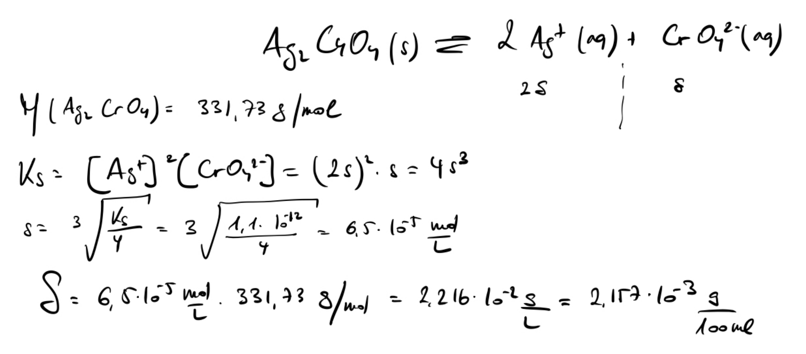
Exercice : La solubilité molaire du sulfate d’argent (Ag₂SO₄) est de \(1,5 \times 10^{-2}\) M. Calculez le \(K_s\). (Réponse : \(1,35 \times 10^{-5}\))
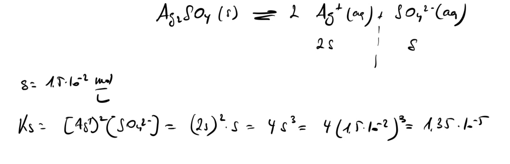
12.0.4 Exercices supplémentaires : dissolution d’un seul sel
Exercice : Pour chaque sel dissous dans l’eau, écrire l’équation ionique (indiquer les ions avec leurs charges et leur état physique) de dissociation ainsi que la constante de solubilité.
| Composé dissous |
|---|
| NaCl (aq) |
| KNO₃ (aq) |
| CaCl₂ (aq) |
| Al(NO₃)₃ (aq) |
| MgBr₂ (aq) |
| NH₄Cl (aq) |
| Ba(NO₃)₂ (aq) |
| SrI₂ (aq) |
| Li₂SO₄ (aq) |
| Na₂CO₃ (aq) |
| K₂SO₄ (aq) |
| NaCH₃COO (aq) |
| Ca(NO₃)₂ (aq) |
| ZnCl₂ (aq) |
| Fe(NO₃)₃ (aq) |
| AgNO₃ (aq) |
| Pb(NO₃)₂ (aq) |
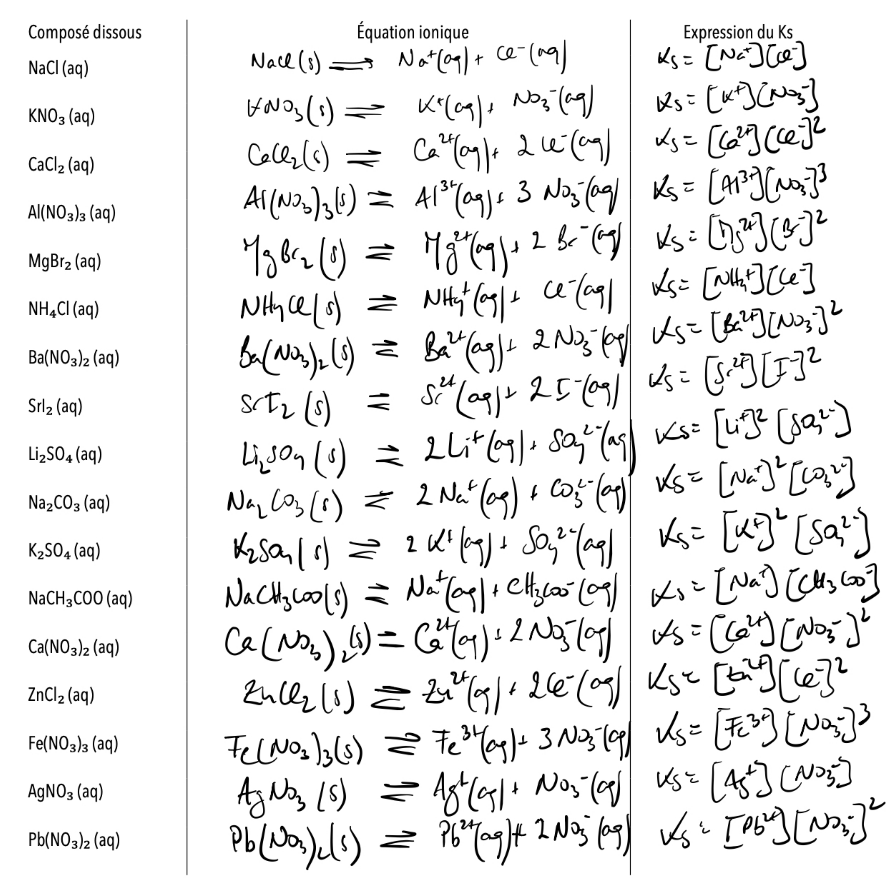
Exercice : Le produit de solubilité de Ag₂CO₃ vaut \(8,46 \times 10^{-12}\). Quelle est la concentration d’une solution saturée en mol/l et en g/l ? (Réponse : \(1,28 \times 10^{-4}\) mol/l ; \(3,54 \times 10^{-2}\) g/l)
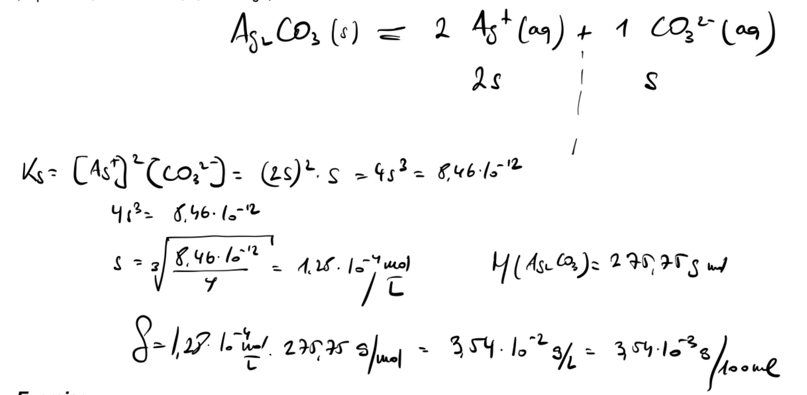
Exercice : Le carbonate de sodium Na₂CO₃ est un solide très courant que l’on trouve dissout par exemple dans les eaux calcaires.
- Que vaut sa solubilité en mol/l si \(K_s = 1,2\) ? (réponse : \(s = 0,67\) mol/l)
- Quelle est sa solubilité massique (kg/l) maximale ? (réponse : \(0,071\) kg/l)
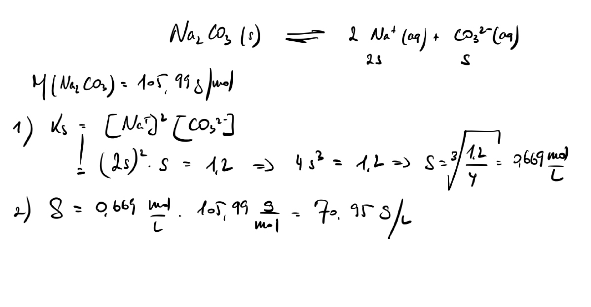
12.0.5 Mélange de deux solutions sans ion commun : précipité ou pas de précipité ?
12.0.5.1 Le quotient
Lorsqu’on mélange deux solutions contenant des ions susceptibles de former un sel peu soluble, il faut que le produit des concentrations ioniques dépasse \(K_s\).
Apparition d’un précipité ou non? c’est le quotient ionique \(Q\) qui permet de trancher.
Formalisation : Lors du mélange de deux solutions ne partageant aucun ion commun, la procédure est la suivante :
- Identifier le sel peu soluble susceptible de se former.
- Calculer les concentrations des ions concernés après dilution par mélange, en supposant qu’il n’y a pas de précipitation.
- Calculer le quotient ionique \(Q = [\ce{X^{\beta+}}]_0^\alpha \cdot [\ce{Y^{\alpha-}}]_0^\beta\).
- Comparer \(Q\) à \(K_s\) :
| Cas | Conclusion |
|---|---|
| \(Q < K_s\) | Solution insaturée — pas de précipité |
| \(Q = K_s\) | Solution saturée — pas de précipité |
| \(Q > K_s\) | Solution sursaturée — précipité jusqu’à \(Q = K_s\) |
Au niveau particulaire : Si \(Q > K_s\), la solution contient plus d’ions que l’équilibre ne peut en tolérer. À l’échelle particulaire, la fréquence des rencontres entre ions opposés dépasse le seuil à partir duquel les attractions électrostatiques les maintiennent ensemble plutôt qu’en solution. Des ions se réorganisent spontanément en réseau cristallin — c’est la nucléation du précipité — jusqu’à ce que les concentrations restantes satisfassent \(K_s\).
Représentation symbolique : Après vérification que \(Q > K_s\), on calcule les concentrations réelles à l’équilibre par le tableau d’avancement, en notant \(x\) la concentration de sel précipitée.
Si, à la suite du mélange de deux solutions sans précipité, contenant chacune un composé ionique, une précipitation est observée, cela signifie qu’un sel peu soluble a pu se former. Les ions formant le précipité proviennent alors de sources différentes. Les concentrations utilisées dans le calcul du produit ionique ne sont donc plus liées à la stœchiométrie du précipité.
Expérience : réaction de précipitation entre une solution d’AgNO₃ 1 M et une solution de KCl 1 M.

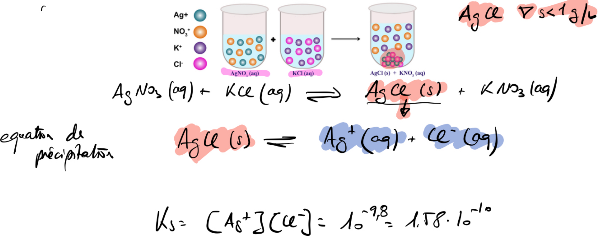
Exemple : Réaction de précipitation du PbI₂ (s)

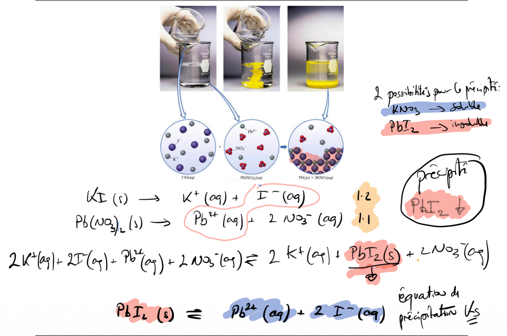
12.0.5.2 Calculs des concentrations après précipitation sans approximation
Observera-t-on une précipitation, l’apparition d’un précipité lors d’un mélange d’une solution de BaCl₂ et d’une Na₂SO₄ ?
(équation globale : \(\ce{BaCl2(aq) + Na2SO4(aq) <=> 2 NaCl(aq) + BaSO4(s)}\) — question manuscrite : « Est-ce que \(\ce{BaSO4(s)}\) apparaît ou non ? »)
La réponse exige d’identifier un composé ayant une faible solubilité.
- NaCl n’a aucune chance de précipiter, car les composés ioniques des métaux de la première colonne sont tous très solubles.
- BaSO₄ est quant à lui faiblement soluble. Il pourrait avoir précipitation.
Pour savoir si on observe une précipitation de BaSO₄, nous devons appliquer la procédure suivante :
- on calcule les concentrations en ions Ba²⁺ et SO₄²⁻ après mélange, en faisant l’hypothèse qu’il n’y a pas de précipitation.
- On introduit ensuite ces valeurs dans l’expression du quotient de solubilité \(Q = [\ce{Ba^{2+}}]_0 \cdot [\ce{SO4^{2-}}]_0\).
- Si le quotient ionique dépasse le produit de solubilité \(K_s = [\ce{Ba^{2+}}] \cdot [\ce{SO4^{2-}}]\) de BaSO₄, la précipitation a lieu.
- Le calcul des quantités restantes en solution après précipitation en considérant une quantité \(x\) précipitant et en soustrayant les quantités de ions précipités aux ions en solution.
En conclusion, nous avons trois possibilités :
Cas 1 \(Q < K_s\) — solution insaturée : pas de précipité.
Cas 2 \(Q = K_s\) — solution saturée : pas de précipité.
Cas 3 \(Q > K_s\) — solution sursaturée : précipité, jusqu’à ce que le \(Q\) soit égal à \(K_s\).
Dans le cas 3, \(Q > K_s\), solution sursaturée, la résolution demande des calculs souvent complexes. Dans certains cas où \(Q \gg K_s\), il est possible d’approximer que le limitant se transforme dans un premier temps entièrement en précipité afin de simplifier les calculs.
Exercice : On mélange 20 ml d’une solution 0,001 M de BaCl₂ et 50 ml d’une solution 0,001 M de Na₂SO₄. Sachant que le produit de solubilité de BaSO₄ vaut \(1,1 \times 10^{-10}\). Quelles sont les nombres de moles des 4 ions présents en solution après précipitation ? (réponses : n(BaSO₄(s)) = \(1,998 \times 10^{-5}\) mol, [Ba²⁺(aq)] = \(3 \times 10^{-7}\) mol/l, [SO₄²⁻(aq)] = \(4,29 \times 10^{-4}\) mol/l, [Cl⁻(aq)] = \(5,714 \times 10^{-4}\) mol/l, [Na⁺(aq)] = \(1,429 \times 10^{-3}\) mol/l)
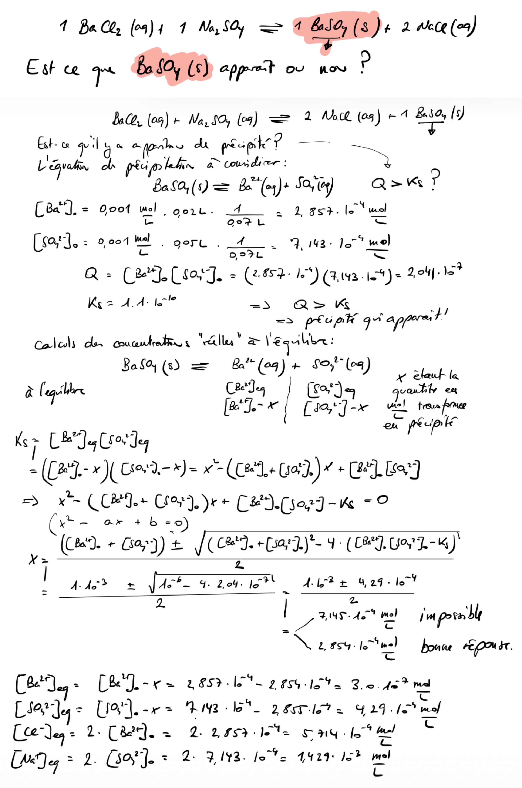
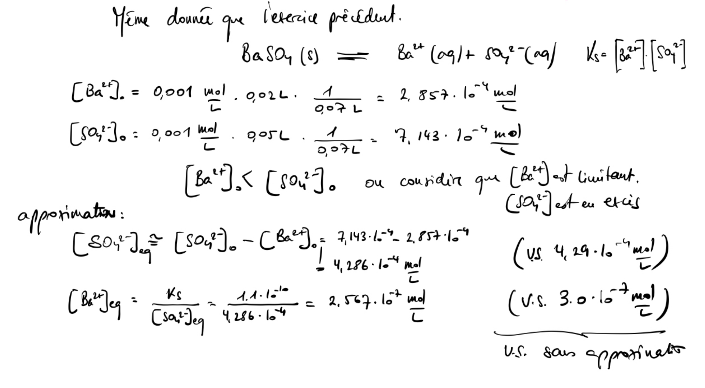
12.0.5.3 Calculs des concentrations après précipitation avec approximation
Exercice : On introduit dans 1 L de solution de nitrate d’argent 0,1 M complètement dissout 10 mg de chlorure de plomb PbCl₂ solide. Observe-t-on un précipité ? Si oui, lequel ? Quelle est la quantité en gramme de précipité que nous pourrions observer ? On donne \(K_s(\ce{AgCl}) = 1,77 \times 10^{-10}\) (Réponse : [Cl⁻(aq)] = 1,77 nM, [Ag⁺(aq)] = \(9,99 \times 10^{-2}\) mol/l, m(AgCl(s)) = 10,3 mg)
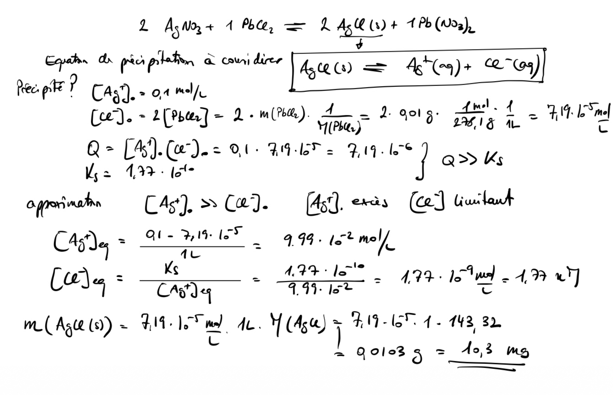
Exercice : On mélange 200 ml d’une solution 0,01 M de K₃PO₄ avec 50 ml d’une solution 0,001 M de AgNO₃. Sachant que le produit de solubilité de Ag₃PO₄ vaut \(1,05 \times 10^{-16}\), pensez-vous qu’on observera une précipitation de ce composé ? Quelles sont les concentrations molaires des 4 ions présents en solution ? (réponses : [PO₄³⁻(aq)] = \(7,9 \times 10^{-3}\) mol/l, [NO₃⁻(aq)] = \(2,4 \times 10^{-4}\) mol/l, [Ag⁺(aq)] = \(2,38 \times 10^{-5}\) mol/l, [K⁺(aq)] = \(2,4 \times 10^{-2}\) mol/l)
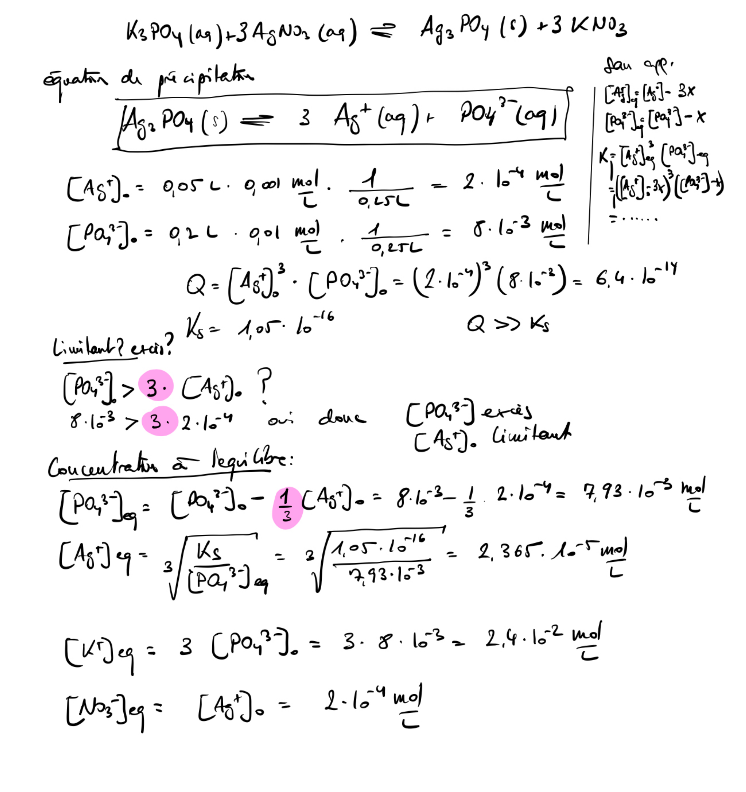
12.0.6 Mélange de deux solutions ayant ion commun (l’effet ion commun)
L’effet ion commun apparaît lorsqu’on mélange un solide (ou une solution salée) à une autre solution contenant déjà un des ions qui composent le précipité. La solubilité du sel diminue alors par effet d’ion commun.
Formalisation : L’effet ion commun est le déplacement d’un équilibre de dissolution causé par la présence en solution d’un ion qui entre dans l’expression de \(K_s\) du sel considéré. Conformément au principe de Le Châtelier, l’ajout d’un produit déplace l’équilibre dans le sens inverse — ici, vers la recristallisation. La solubilité \(s'\) du sel en présence de l’ion commun est donc inférieure à sa solubilité \(s\) dans l’eau pure.
Au niveau particulaire : La concentration accrue d’un des ions en solution augmente la fréquence des collisions entre cet ion et la surface du cristal, favorisant la recristallisation par rapport à la dissolution. L’équilibre se rétablit à une solubilité plus faible.
Représentation symbolique : On reprend le tableau d’avancement en intégrant la concentration initiale \(c_0\) de l’ion commun. Pour \(\ce{AgCl(s) <=> Ag+(aq) + Cl-(aq)}\) dans une solution contenant déjà \([\ce{Cl-}]_0 = c_0\) :
\[K_s = s'(s' + c_0)\]
Si \(c_0 \gg s'\) (approximation valide lorsque \(c_0 \gg \sqrt{K_s}\)) :
\[K_s \approx s' \cdot c_0 \implies s' \approx \frac{K_s}{c_0}\]
Exemple : Quelle est la solubilité de AgCl (\(K_s(\ce{AgCl}) = 1,77 \times 10^{-10}\)) dans une solution de NaCl 0,55 M ? Est-elle identique à la solubilité dans l’eau pure ? (réponse : \(s' = 3,22 \times 10^{-10}\) M, facteur de réduction ≈ 40’000 par rapport à \(s_\text{eau pure} \approx 1,33 \times 10^{-5}\) M)
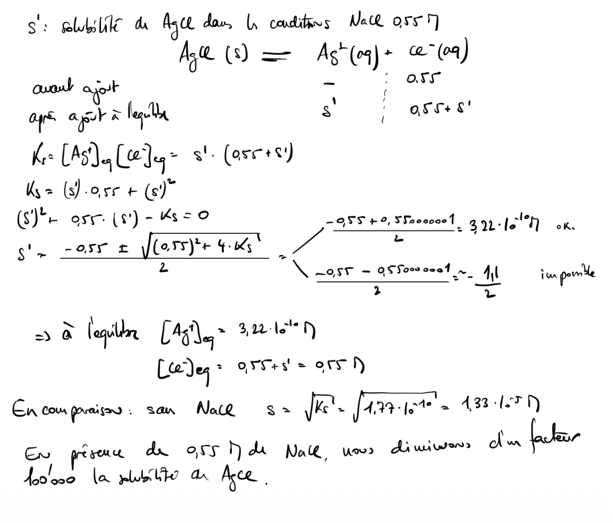
Exemple travaillé — limites de l’approximation : Calculer la solubilité de \(\ce{PbI2}\) (\(K_s = 9{,}8 \times 10^{-9}\)) dans une solution de \(\ce{CaI2}\) à \(5 \times 10^{-6}\) M.
\([\ce{I-}]_0 = 2 \times 5 \times 10^{-6} = 10^{-5}\) M.
\[\ce{PbI2(s) <=> Pb^{2+}(aq) + 2 I-(aq)}\]
Avec l’approximation \([\ce{I-}]_{eq} \approx 10^{-5}\) M :
\[s' \approx \frac{K_s}{(10^{-5})^2} = \frac{9{,}8 \times 10^{-9}}{10^{-10}} = 98 \ \text{mol/L}\]
Attention : ce résultat est physiquement absurde. L’approximation n’est plus valide car \(c_0 = 10^{-5}\) M \(\ll \sqrt{K_s} = \sqrt{9{,}8 \times 10^{-9}} \approx 9{,}9 \times 10^{-5}\) M : la condition \(c_0 \gg \sqrt{K_s}\) n’est pas satisfaite. Sans approximation (résolution numérique), on obtient \(s' \approx 1{,}30 \times 10^{-3}\) M — proche de la solubilité dans l’eau pure (\(s = 1{,}35 \times 10^{-3}\) M). L’ion commun est ici si dilué qu’il n’affecte presque pas la solubilité.
Question de contrôle avant d’appliquer l’approximation : vérifier que \(c_0 \gg \sqrt{K_s}\). Si la condition n’est pas satisfaite, résoudre sans approximation ou utiliser un solveur numérique.
Par exemple l’ajout de AgCl (s), sel peu soluble, à une solution contenant du AgNO₃ (aq) contribue dans un premier temps à une augmentation de la concentration totale en solution de l’ion argent :
\[\ce{AgCl(s) + AgNO3(aq) -> Ag+(aq) + Cl-(aq) + NO3-(aq)}\]
L’augmentation de \([\ce{Ag+}]\) par la présence d’Ag⁺ en solution rendra ainsi le quotient \(Q\) supérieur au produit de solubilité :
\[Q = [\ce{Ag+}]_0 [\ce{Cl-}]_0 > K_s\]
Pour établir l’équilibre, il y aura donc formation d’un précipité de AgCl jusqu’à ce que la valeur du produit ionique soit de nouveau égale à celle de \(K_s\).
L’ajout d’un ion Ag⁺ déjà présent dans la solution se solde donc par une diminution de la solubilité du sel AgCl en solution.
Cet exemple montre ce que l’on appelle l’effet d’ion commun, c’est-à-dire le déplacement d’un équilibre causé par la présence d’un ion commun.
Exercice : Calculer la solubilité du chromate d’argent dans une solution de nitrate d’argent de concentration 0,01 M. La comparer à la solubilité dans l’eau pure \(s = 6,3 \times 10^{-5}\) M. \(K_s(\ce{Ag2CrO4}) = 1,12 \times 10^{-12}\). (Réponse = \(1,12 \times 10^{-8}\) M)
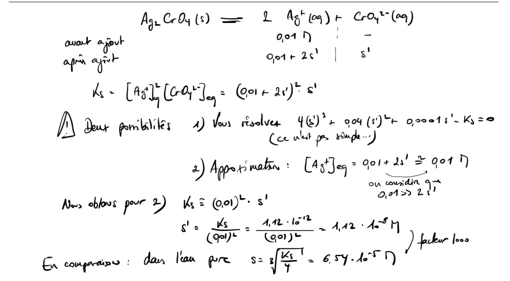
Exemple : Considérer l’iodure de plomb PbI₂, \(K_s = 9,8 \times 10^{-9}\).
- Que vaut sa solubilité en mol/l dans l’eau pure ? (Réponse : \(s = 1,35 \times 10^{-3}\) M)
- Que vaut sa solubilité dans une solution d’iodure de potassium 0,1 M ? (Réponse avec approx : \(s' = 9,8 \times 10^{-7}\) M)
- Que vaut sa solubilité dans une solution d’iodure de calcium à \(5 \times 10^{-6}\) M ? (Réponse avec approx : \(s' = 98\) M, sans approx : \(s' \approx 1,30 \times 10^{-3}\) M)
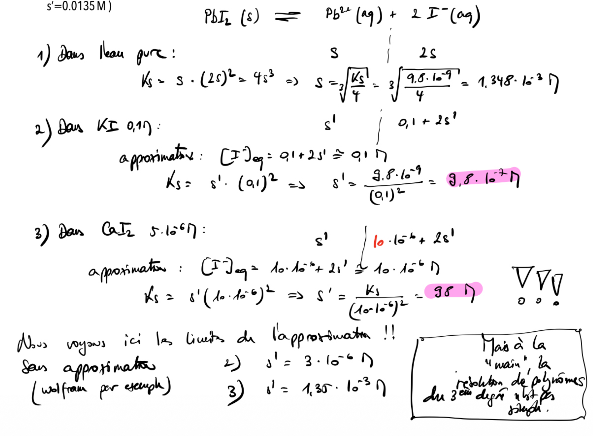
12.0.7 Précipitation dû à un changement de température
À partir d’une quantité de sel dissout donnée, qui dépend de la température, le sel ne se dissout plus : la solution est dite « saturée ». Pourquoi ? Parce que la constante d’équilibre change en fonction de la température.
Conception courante : On croit souvent que chauffer une solution favorise toujours la dissolution d’un sel. C’est vrai pour la majorité des sels dont la dissolution est endothermique — mais certains composés ioniques ont une solubilité qui diminue avec la température. Pour eux, c’est en chauffant qu’un précipité peut se former.
Analogie : Pensez à la vapeur d’eau qui se condense sur un miroir froid : c’est la baisse de température qui provoque le changement de phase. Pour les sels à solubilité décroissante, c’est l’élévation de température qui “expulse” le soluté hors de la solution. La limite de cette analogie : la condensation est un changement d’état physique ; ici, c’est un équilibre ionique dont la constante \(K_s\) dépend de \(T\) via la relation de Van’t Hoff.
Formalisation : Puisque \(K_s\) est une constante d’équilibre, elle dépend de la température selon la relation de Van’t Hoff (formalisée au chapitre 9). Deux cas sont possibles :
- Si la dissolution est endothermique (\(\Delta_r H^\circ > 0\)) : \(K_s\) augmente avec \(T\) — le sel se dissout davantage à chaud.
- Si la dissolution est exothermique (\(\Delta_r H^\circ < 0\)) : \(K_s\) diminue avec \(T\) — le sel se dissout moins à chaud, et un précipité peut apparaître par chauffage.
Attention : cette évolution inverse de la solubilité avec la température ne s’observe qu’avec certains composés ioniques. Les composés moléculaires organiques ont une solubilité qui croît systématiquement avec \(T\) — ce comportement inverse ne les concerne pas.
Au niveau particulaire : L’élévation de température modifie l’agitation thermique des ions et les interactions électrostatiques dans le réseau cristallin. Pour les sels dont la dissolution est exothermique, l’énergie apportée par la chaleur déstabilise davantage les ions en solution qu’en réseau — l’équilibre se déplace vers la recristallisation.
Représentation symbolique : La dépendance de \(K_s\) en \(T\) est donnée par la relation de Van’t Hoff :
\[\ln\frac{K_s(T_2)}{K_s(T_1)} = -\frac{\Delta_r H^\circ}{R} \left(\frac{1}{T_2} - \frac{1}{T_1}\right)\]
Exemple travaillé : L’acétate de calcium \(\ce{Ca(CH3COO)2}\) présente la solubilité suivante :
| Température | \(K_s\) | Solubilité (g/100 ml) |
|---|---|---|
| \(0\ ^{\circ}\)C | 53 | 37,4 |
| \(20\ ^{\circ}\)C | 42 | 34,7 |
| \(100\ ^{\circ}\)C | 26 | 29,7 |
La solubilité diminue avec la température : la dissolution de \(\ce{Ca(CH3COO)2}\) est exothermique. Une solution saturée à \(20\ ^{\circ}\)C contient 34,7 g/100 ml. Si on la chauffe à \(100\ ^{\circ}\)C, la solubilité tombe à 29,7 g/100 ml : la différence, soit \(34{,}7 - 29{,}7 = 5{,}0\) g par 100 ml de solution, précipite.
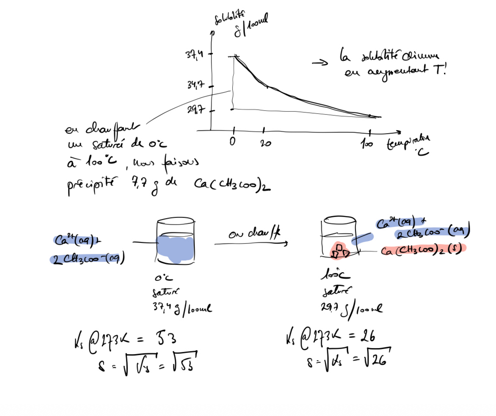
12.0.8 Exercices supplémentaires
Exercice 1.
On ajoute 200 ml de BaCl₂ 0,0040 M à 600 ml de K₂SO₄ 0,008 M. Y aura-t-il formation d’un précipité ? \(K_s\) de BaSO₄ vaut \(1,1 \times 10^{-10}\). Calculer les concentrations à l’équilibre avec approximation (Réponse : \([\ce{Ba^{2+}}] = K_s/[\ce{SO4^{2-}}]\), \([\ce{SO4^{2-}}] = 0,005\) M) et comparer à l’aide d’un calculateur comme wolframalpha.com la réponse sans approximation.
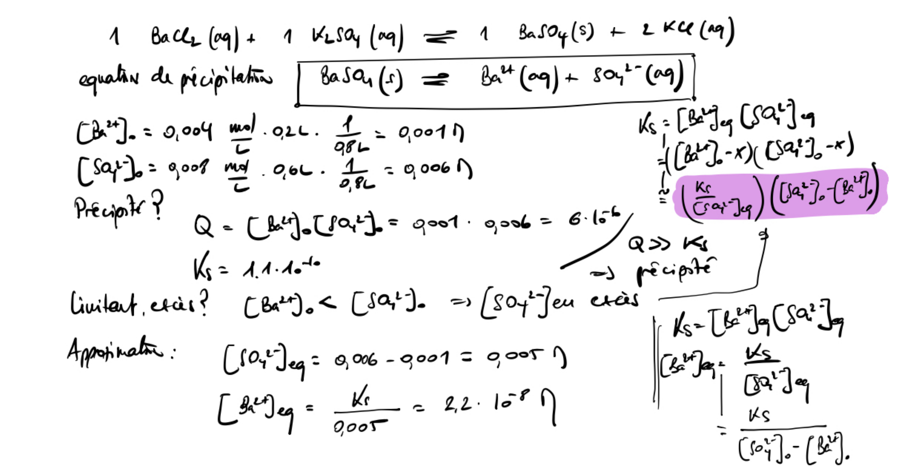
Exercice 2.
Si l’on verse 2,00 ml de NaOH 0,200 M dans 1,00 l de CaCl₂ 0,100 M, y aura-t-il formation d’un précipité ? \(K_s\) de Ca(OH)₂ vaut \(8,0 \times 10^{-6}\). (réponse : pas de précipité)
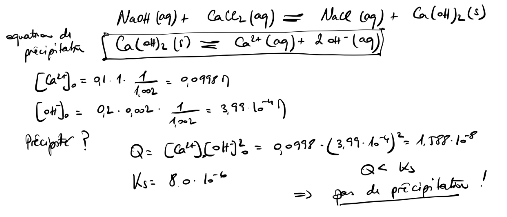
Exercice 3.
Calculez la solubilité du chlorure d’argent, AgCl (M = 143,32 g/mol) en grammes par litre, dans une solution de nitrate d’argent AgNO₃ \(6,5 \times 10^{-3}\) M. La solubilité de AgCl dans l’eau pure est de \(1,9 \times 10^{-3}\) g/l. (Réponse : \(s = 2,703 \times 10^{-8}\) mol/l)
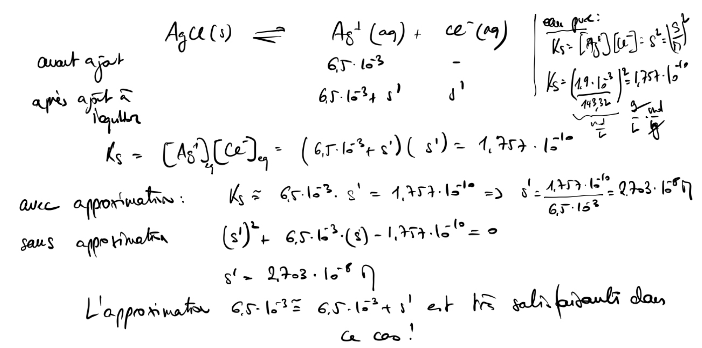
Exercice 4.
Calculez les solubilités, à 25 °C, du sulfate de baryum, en moles par litre :
- dans l’eau ;
- dans une solution de nitrate de baryum 0,010 M.
\(K_s\) du sulfate de baryum vaut \(1,1 \times 10^{-10}\). (Réponse : \(s = 1,05 \times 10^{-5}\) mol/l, \(s' = 1,1 \times 10^{-8}\) mol/l)
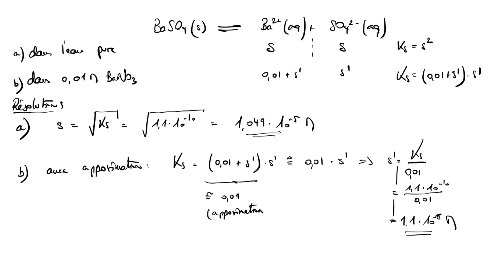
Exercice 5.
Calculez la solubilité, à 25 °C, du chromate d’argent, Ag₂CrO₄, en moles par litre, dans une solution de chromate de potassium, K₂CrO₄, 0,005 M. Comparez-la à celle dans l’eau. \(K_s\) de Ag₂CrO₄ vaut \(1,1 \times 10^{-12}\). (Réponse : \(s = 6,05 \times 10^{-5}\) mol/l, \(s' = 7,416 \times 10^{-6}\) mol/l)
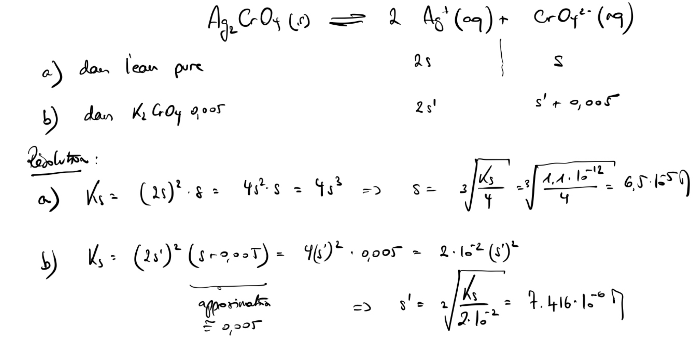
Exercices de synthèse
Le fluorure de calcium \(\ce{CaF2}\) a un \(K_s = 3{,}45 \times 10^{-11}\). Calculez sa solubilité molaire \(s\) et sa solubilité massique \(S\).1
La solubilité du sulfate de baryum \(\ce{BaSO4}\) dans l’eau à \(25\ ^{\circ}\)C est de \(2{,}4 \times 10^{-3}\) g/L. Calculez son produit de solubilité \(K_s\).2
On dispose d’une solution contenant \(\ce{Pb^{2+}}\) à \(1{,}0 \times 10^{-3}\) M et \(\ce{SO4^{2-}}\) à \(1{,}0 \times 10^{-4}\) M. \(K_s(\ce{PbSO4}) = 2{,}53 \times 10^{-8}\). Un précipité se forme-t-il ?3
On mélange 100 ml d’une solution de \(\ce{Pb(NO3)2}\) à \(0{,}020\) M et 100 ml d’une solution de \(\ce{Na2SO4}\) à \(0{,}010\) M. \(K_s(\ce{PbSO4}) = 2{,}53 \times 10^{-8}\). Calculez les concentrations de \(\ce{Pb^{2+}}\) et \(\ce{SO4^{2-}}\) à l’équilibre.4
Calculez la solubilité de \(\ce{AgCl}\) (\(K_s = 1{,}77 \times 10^{-10}\)) dans une solution de \(\ce{CaCl2}\) à \(0{,}10\) M. Comparez à la solubilité dans l’eau pure.5
On dissout \(\ce{AgNO3}\) jusqu’à obtenir une solution à \(0{,}050\) M. On ajoute ensuite \(\ce{NaCl}\) solide jusqu’à saturation en \(\ce{AgCl}\) (\(K_s = 1{,}77 \times 10^{-10}\)). Quelle est la concentration résiduelle en \(\ce{Ag+}\) à l’équilibre ?6
Le carbonate de magnésium \(\ce{MgCO3}\) a \(K_s = 6{,}82 \times 10^{-6}\). Sa dissolution est endothermique (\(\Delta_r H^\circ > 0\)). Sa solubilité augmente-t-elle ou diminue-t-elle si on chauffe la solution ? Justifiez sans calcul.7
L’hydroxyde de fer(III) \(\ce{Fe(OH)3}\) a \(K_s = 2{,}79 \times 10^{-39}\). Calculez sa solubilité molaire \(s\) dans l’eau pure, puis la concentration en \(\ce{OH-}\) à l’équilibre.8
On mélange 50 ml de \(\ce{AgNO3}\) à \(1{,}0 \times 10^{-3}\) M et 50 ml de \(\ce{Na3PO4}\) à \(1{,}0 \times 10^{-4}\) M. \(K_s(\ce{Ag3PO4}) = 1{,}05 \times 10^{-16}\). Un précipité se forme-t-il ? Justifiez par le calcul de \(Q\).9
Une solution saturée de \(\ce{PbI2}\) (\(K_s = 9{,}8 \times 10^{-9}\)) est préparée à \(25\ ^{\circ}\)C. On ajoute ensuite \(\ce{KI}\) solide jusqu’à porter \([\ce{I-}]\) à \(0{,}10\) M. Calculez la nouvelle solubilité \(s'\) de \(\ce{PbI2}\) et le facteur de réduction par rapport à l’eau pure.10
Projet-Balmer Dernière mise à jour : 2026-10-05
Ces défis s’adressent à ceux qui veulent aller réellement plus loin. Ils exigent de mobiliser les notions de Zone 2 dans des contextes nouveaux.
Défi A — Approfondissement : la relation de Van’t Hoff appliquée à un produit de solubilité
Le produit de solubilité de \(\ce{PbI2}\) à \(25\ ^{\circ}\)C (\(298\) K) vaut \(K_s = 9{,}8 \times 10^{-9}\). Sa dissolution est endothermique, avec \(\Delta_r H^\circ = +61\) kJ/mol.
Calculez le produit de solubilité \(K_s\) de \(\ce{PbI2}\) à \(50\ ^{\circ}\)C (\(323\) K), en utilisant la relation de Van’t Hoff vue en Zone 2. La solubilité de ce sel augmente-t-elle ou diminue-t-elle avec la température, et ce résultat est-il cohérent avec le sens de la dissolution ?11
Défi B — Transfert : précipitation sélective en chimie analytique environnementale
Les eaux usées d’une industrie contiennent simultanément des ions \(\ce{Pb^{2+}}\) et \(\ce{Ca^{2+}}\), chacun à \(5{,}0 \times 10^{-3}\) M. Un traitement consiste à ajouter progressivement une solution de \(\ce{Na2SO4}\) pour précipiter sélectivement le plomb sous forme de \(\ce{PbSO4}\), sans précipiter le calcium.
On donne : \(K_s(\ce{PbSO4}) = 2{,}53 \times 10^{-8}\) et \(K_s(\ce{CaSO4}) = 4{,}93 \times 10^{-5}\).
- Calculez la concentration en \(\ce{SO4^{2-}}\) nécessaire pour amorcer la précipitation de \(\ce{PbSO4}\), puis celle nécessaire pour amorcer la précipitation de \(\ce{CaSO4}\).
- Existe-t-il une plage de concentration en \(\ce{SO4^{2-}}\) permettant de précipiter \(\ce{Pb^{2+}}\) sans toucher \(\ce{Ca^{2+}}\) ?
- Quelle est la concentration résiduelle en \(\ce{Pb^{2+}}\) au moment où \(\ce{CaSO4}\) commence à précipiter ?12
Défi C — Ouverture : \(K_s\) peut-il vraiment être constant ?
Dans toute la Zone 2, nous avons traité \(K_s\) comme une constante ne dépendant que de la température. Cette hypothèse est-elle toujours justifiée en pratique ?
Réfléchissez aux situations suivantes et argumentez pour chacune si \(K_s\) reste un outil fiable ou si des corrections seraient nécessaires :
- Une solution très concentrée en ions étrangers (par exemple \(\ce{NaNO3}\) à 1 M) modifie-t-elle la valeur effective de \(K_s\) ? Quel concept physico-chimique est en jeu ?
- Pour des sels dont le cation est susceptible de former des complexes avec des ligands présents en solution (par exemple \(\ce{Ag+}\) en présence d’ammoniac), la solubilité mesurée coïncide-t-elle avec celle prédite par \(K_s\) seul ?
- À quelle condition l’expression simplifiée \(K_s = [\ce{X^{\beta+}}]^\alpha \cdot [\ce{Y^{\alpha-}}]^\beta\) est-elle rigoureusement exacte ?13
12.1 Mots-clés
Produit de solubilité (\(K_s\)) : constante d’équilibre de la dissolution d’un solide ionique dans l’eau ; produit des concentrations ioniques à l’équilibre élevées à leurs coefficients stœchiométriques.
Solubilité (\(s\)) : concentration maximale d’un sel dissous à l’équilibre dans un solvant à température donnée, en mol/L ; liée à \(K_s\) par la stœchiométrie de la dissolution.
Solubilité massique (\(S\)) : solubilité exprimée en g/L, obtenue par \(S = s \cdot M\) où \(M\) est la masse molaire du sel.
Précipité : sel solide en équilibre thermodynamique avec une solution saturée ; se forme lorsque le quotient ionique \(Q\) dépasse \(K_s\).
Quotient ionique (\(Q\)) : produit des concentrations ioniques à un instant donné, de même forme que \(K_s\) ; \(Q < K_s\) : solution insaturée, \(Q = K_s\) : solution saturée, \(Q > K_s\) : précipitation.
États de saturation : une solution est insaturée si la concentration en sel dissous est inférieure à \(s\) (pas de précipité), saturée si elle est égale à \(s\) (limite atteinte), sursaturée si elle la dépasse (précipité présent).
Effet ion commun : diminution de la solubilité d’un sel peu soluble causée par la présence en solution d’un de ses ions constitutifs ; conséquence du principe de Le Châtelier.
Projet-Balmer Dernière mise à jour : 2026-10-05
Projet-Balmer
\(s = \sqrt[3]{K_s/4} \approx 2{,}06 \times 10^{-4}\) mol/L ; \(S \approx 0{,}016\) g/L (\(M(\ce{CaF2}) = 78{,}07\) g/mol).↩︎
\(s = 2{,}4 \times 10^{-3}/233{,}4 \approx 1{,}03 \times 10^{-5}\) mol/L ; \(K_s = s^2 \approx 1{,}06 \times 10^{-10}\).↩︎
\(Q = 1{,}0 \times 10^{-3} \times 1{,}0 \times 10^{-4} = 1{,}0 \times 10^{-7} > K_s\) : précipité formé.↩︎
Concentrations après mélange : \([\ce{Pb^{2+}}]_0 = 0{,}010\) M, \([\ce{SO4^{2-}}]_0 = 0{,}005\) M. \(Q \gg K_s\) : précipité. \([\ce{SO4^{2-}}]_{eq} \approx 1{,}27 \times 10^{-6}\) mol/L ; \([\ce{Pb^{2+}}]_{eq} \approx 0{,}005\) mol/L (excès).↩︎
\([\ce{Cl-}]_0 = 2 \times 0{,}10 = 0{,}20\) M ; \(s' \approx K_s / 0{,}20 \approx 8{,}85 \times 10^{-10}\) mol/L ; facteur de réduction \(\approx 15\,000\) par rapport à \(s = 1{,}33 \times 10^{-5}\) mol/L dans l’eau pure.↩︎
\([\ce{Cl-}]_{eq} \approx 0{,}050\) M (excès) ; \([\ce{Ag+}]_{eq} = K_s / 0{,}050 = 3{,}54 \times 10^{-9}\) mol/L.↩︎
La solubilité augmente avec \(T\) : dissolution endothermique, Le Châtelier déplace l’équilibre dans le sens direct quand on apporte de l’énergie.↩︎
\(\ce{Fe(OH)3 <=> Fe^{3+} + 3 OH-}\) ; \(K_s = s(3s)^3 = 27s^4\) ; \(s = (K_s/27)^{1/4} \approx 1{,}77 \times 10^{-10}\) mol/L ; \([\ce{OH-}] = 3s \approx 5{,}3 \times 10^{-10}\) mol/L.↩︎
Concentrations après mélange : \([\ce{Ag+}]_0 = 5{,}0 \times 10^{-4}\) M, \([\ce{PO4^{3-}}]_0 = 5{,}0 \times 10^{-5}\) M ; \(Q = (5{,}0 \times 10^{-4})^3 \times 5{,}0 \times 10^{-5} = 6{,}25 \times 10^{-15} > K_s\) : précipité formé.↩︎
\(s_\text{eau pure} = (K_s/4)^{1/3} \approx 1{,}35 \times 10^{-3}\) mol/L ; avec \([\ce{I-}]_0 = 0{,}10\) M : \(s' \approx K_s / (0{,}10)^2 = 9{,}8 \times 10^{-7}\) mol/L ; facteur de réduction \(\approx 1\,380\).↩︎
\(\ln(K_s(323)/K_s(298)) \approx 1{,}91\) ; \(K_s(323) \approx 9{,}8 \times 10^{-9} \times e^{1{,}91} \approx 6{,}6 \times 10^{-8}\). La solubilité augmente avec \(T\), cohérent avec une dissolution endothermique.↩︎
Seuil \(\ce{PbSO4}\) : \([\ce{SO4^{2-}}]_c = K_s/[\ce{Pb^{2+}}] = 5{,}06 \times 10^{-6}\) M. Seuil \(\ce{CaSO4}\) : \([\ce{SO4^{2-}}]_c = K_s/[\ce{Ca^{2+}}] = 9{,}86 \times 10^{-3}\) M. Plage utilisable : entre \(5 \times 10^{-6}\) M et \(9{,}86 \times 10^{-3}\) M. \([\ce{Pb^{2+}}]_\text{résiduel} = K_s(\ce{PbSO4}) / 9{,}86 \times 10^{-3} \approx 2{,}57 \times 10^{-6}\) M — soit une élimination à plus de 99,9 %.↩︎
Pistes de réflexion — pas de réponse unique attendue. (1) En solution concentrée, les activités ioniques s’écartent des concentrations molaires : des coefficients d’activité \(\gamma < 1\) corrigent \(K_s\) — c’est la théorie de Debye-Hückel. (2) La formation de complexes augmente la solubilité apparente au-delà de ce que \(K_s\) prédit seul — il faut combiner \(K_s\) et les constantes de formation des complexes. (3) L’expression est rigoureuse uniquement en solution infiniment diluée, où les activités se confondent avec les concentrations.↩︎